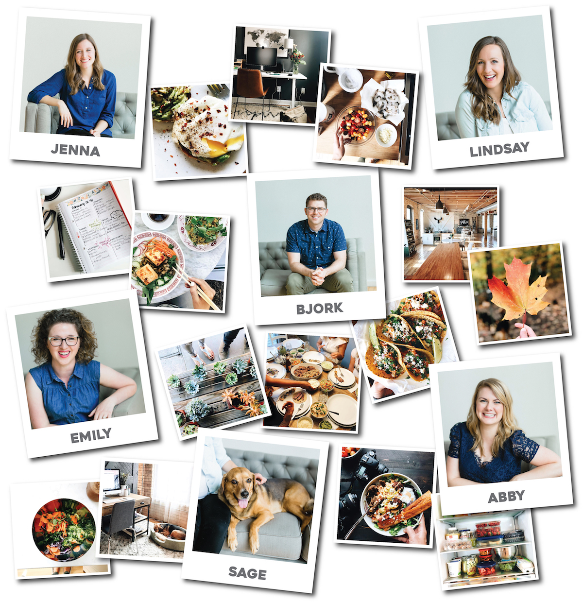

And the Little Beet is my little corner of the internet!
I’m the voice, author, and creator behind the Little Beet. What started as a casual hobby for nights and weekends while I was working as an fourth grade teacher has now grown into a full-blown business (!!) that reaches millions of people with fun recipes each month.
I live in Saint Paul, MN with my husband John and our dogs Scruff and Sage. My favorite things in life are a big plate of pad Thai, sunny days, and going to the dog park.
In this space, I am always sharing fresh, flavorful, (mostly) healthy recipes that I love to make and eat in my real, actual, every day life. If I wouldn’t eat it in real life, I won’t put in on the blog. My goal is to inspire you with food that is both approachable AND exciting, whether you’re cooking for yourself, your family, your roommates, or your friends. I want you to be so excited about these recipes that you eagerly await 5pm when you can go home from work and start cooking.
On a related note, I absolutely LOVE seeing the food that you’re making. It will make my day if you tag @thelittlebeet in your Instagram photos and stories! We love to shout out our favorites on Fridays with our Reader Awards on Instagram Stories.
We have an entire team of geniuses behind us at the Little Beet who are experts in a little bit of everything – from customer service, to social media, to videography, to assisting with recipe shoots. They are EVERYTHING. ♡
